Internship · UX & web design
eNotes UX internship
During my internship at eNotes, a study platform based in Seattle, I redesigned four pages of the site: the paywall, About Us, FAQ and Contact.
- Client
- eNotes
- When
- Winter 2019
- Role
- Graphic design intern
- Scope
- Illustration, photography, wireframes
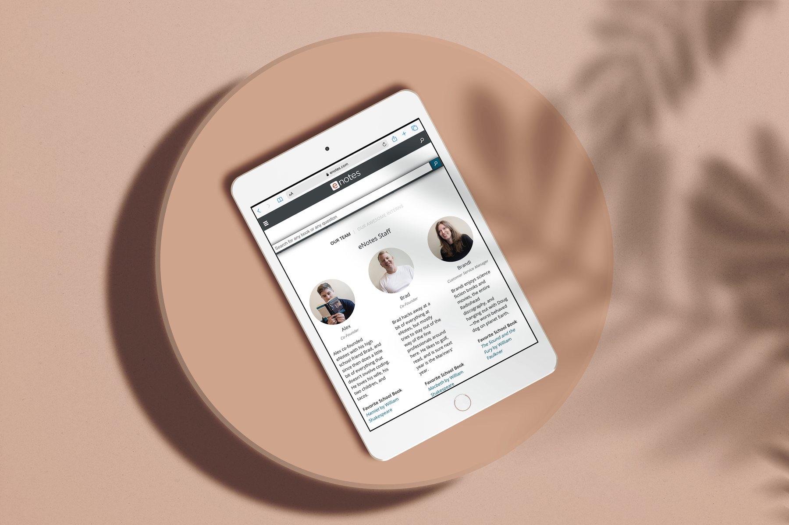
The brief
eNotes has helped students with literature since 1998, and its site had started to feel dated. My job was to make it feel fresher and more modern while staying true to the brand, which is light and playful but still sophisticated.
01
The Golden Square (paywall)
Illustration
The Golden Square is what readers see when they reach premium content: a prompt to start a free trial. I was asked to recreate it, starting with a new illustration.
After the first critique, I moved closer to the house style created by illustrator Yumi. A simpler, sketchier drawing works better on small mobile screens and still gets the message across.
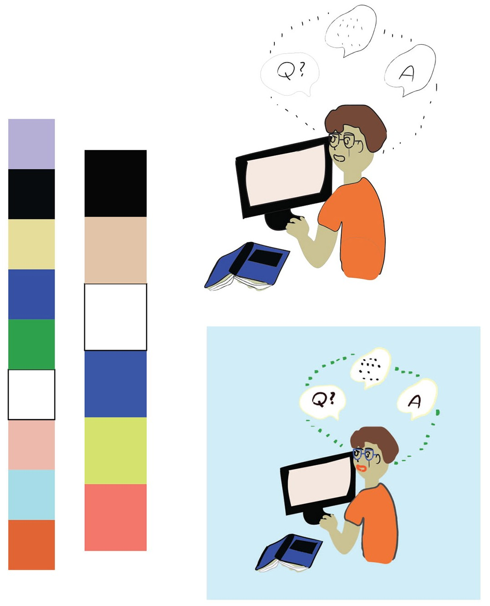
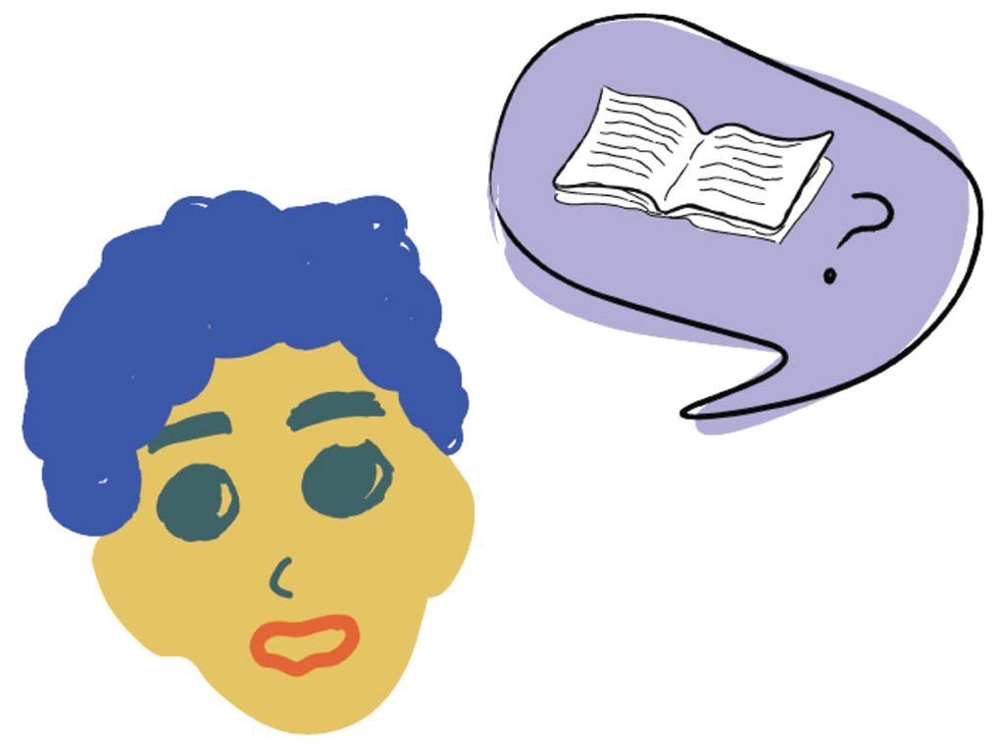
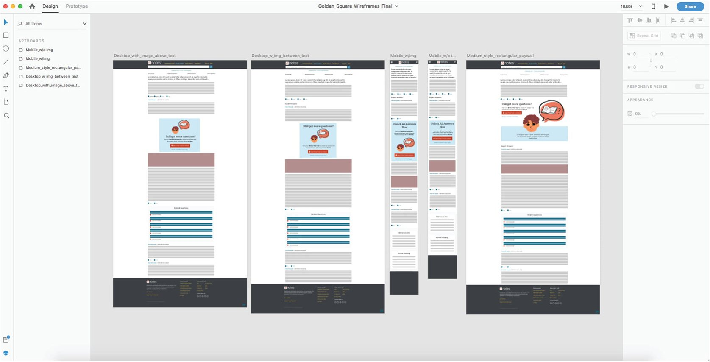
02
About Us page
Where it started
The original page had small round headshots under a heavy blue banner that felt corporate and stale.
I squared off the photos but kept them small, so the page stays compact. I strengthened the hierarchy and removed the banner to give the page a more open, modern feel.
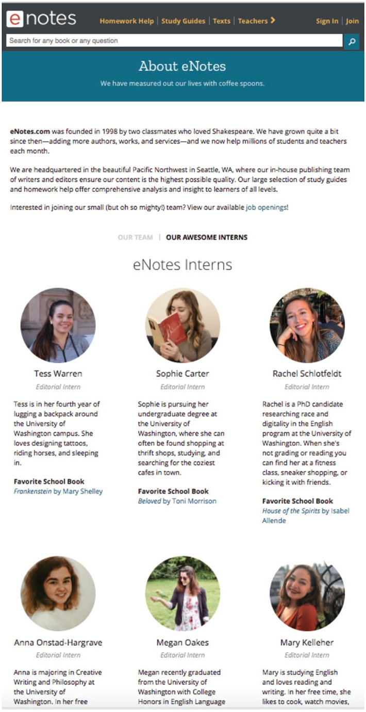
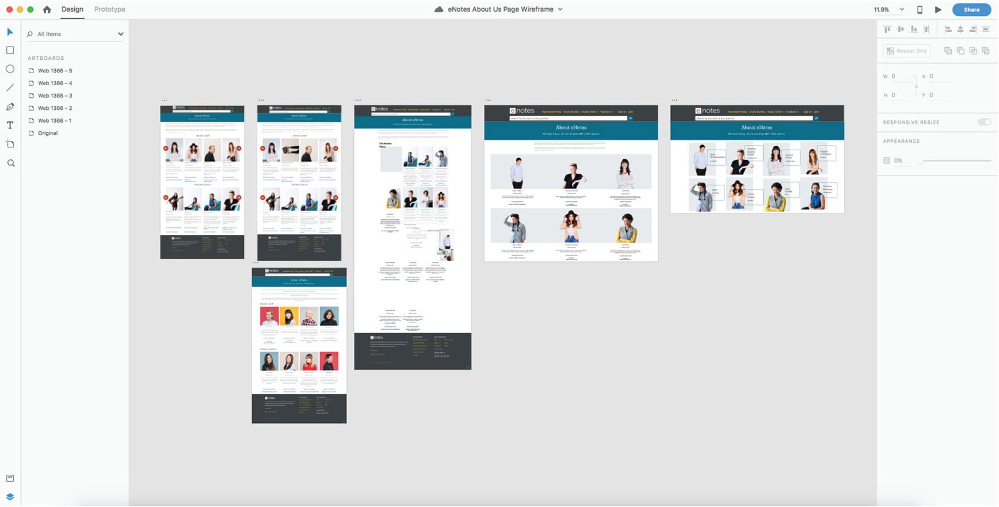
The photoshoot
Over two weeks we took hundreds of portraits. The aim was clean, clear headshots with soft, warm, natural light.
eNotes is a literature company, so each person posed with their favourite book. That turned a row of headshots into a story about the team.
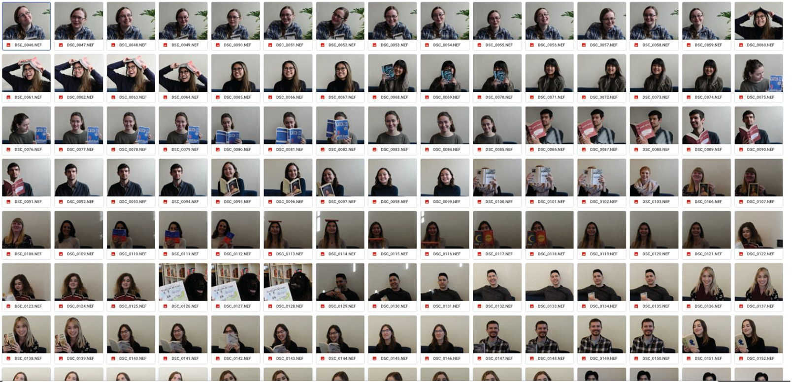
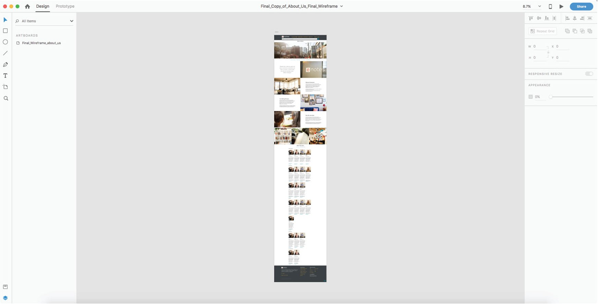
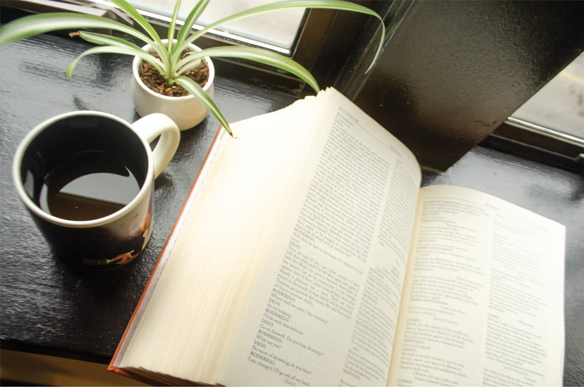
03
FAQ page
Collapsible sections
This was one of my final projects, so I had more creative freedom. I carried over the clean look of the new About page and turned long, clunky lists of questions into collapsible sections. Readers can scan the topics and open only what they need.
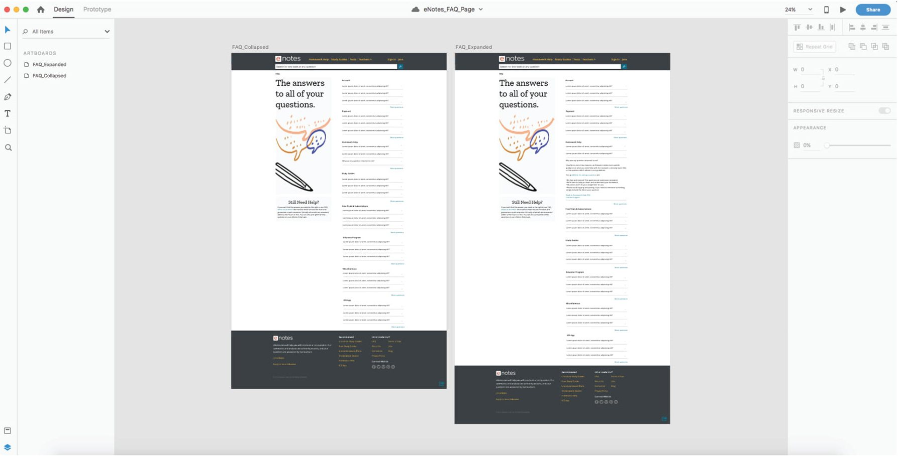
04
Contact page
Keeping it simple
Someone contacting support is usually already a little frustrated. So I kept this page minimal, with a short form, the address and email, and the most common questions right there.
An abstract, soothing illustration by Yumi stands in as a placeholder.
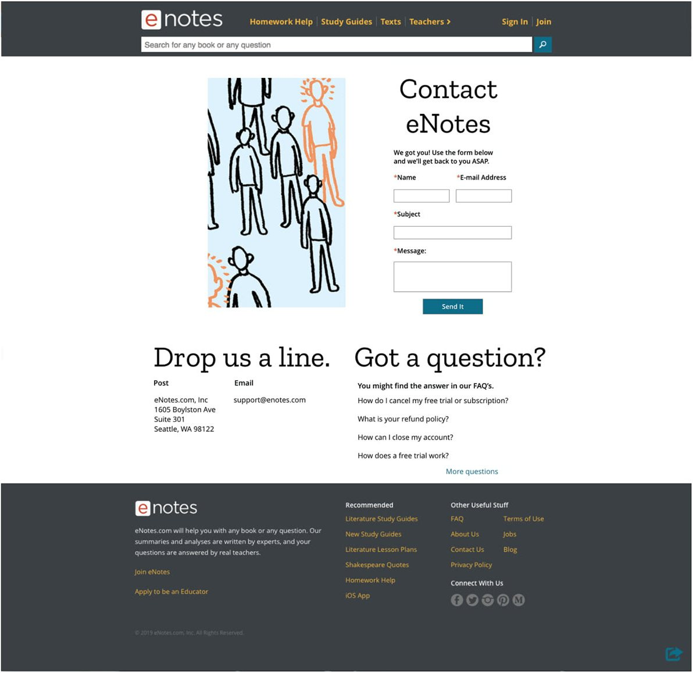
What I took away
This internship taught me how to design inside an existing brand, and how to take critique and adapt my illustration style.